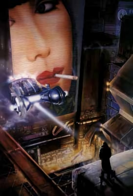
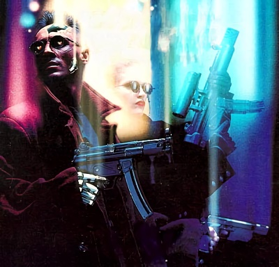

Context
United States of America, year 2020. After the stock market crash of 1994, this country was to undergo radical changes that would disfigure it forever. Riots, crime, martial law, natural disasters, insecurity and epidemics caused the death of one hundred million people in the six years that followed. Two wars in South America against drug traffickers are failures that finalize the discrediting of the American government. The U.S. government lost its influence and several states such as Texas, California and Nevada declared their independence. The power of the corporations is increasing and the most important ones are raising military forces to ensure their own security and defend their interests. Between 2004 and 2007, two corporate wars shook the world economy. More and more cases of genocide, organized crime, mass fraud, espionage, and dispossession linked to corporate activity appeared. In the United States or Japan, the government is the plaything of corporate business interests, which pull the strings of the political class.
In 2020, the American population is concentrated in cities, subject to overpopulation, pervasive crime and pollution. The countryside is a vast wasteland inhabited by nomadic tribes who are at odds with society, or is the stronghold of agricultural megacorporations that jealously guard their arable land.
Abroad, the worst rubs shoulders with the best. The unified Europe imposes its currency, the Eurodollar, as the main currency of the world economy. With the exception of England, which follows the path of the United States, it remains a haven of technology, profit and stability. Australia is following its example. Japan follows suit, being the spearhead of world scientific research. But its government is manipulated by the mafia and corporations.
Russia remains mired in armed conflict and mafia control of the local economy. A neo-communist government has returned to power and advocates immobility and isolationism. South America was for a long time an area of armed conflict that has deeply marked it. Nevertheless, some countries such as Brazil are raising their heads and seem to be emerging from misery. Africa is a privileged place of exchange for Europe and benefits from the latter's wealth. China is also rationalizing its productivity and establishing itself as an industrial power to be reckoned with.
The conquest of space is in full swing, with bases on the Moon and Mars as well as numerous habitable satellites mainly owned by European corporations.
Technology
Far from being handicapped by the collapse of the economy, scientific discoveries have literally exploded. Dazzling advances have been made in fields such as medicine, micro-mechanics and computer science. The culmination of these advances are nanotechnology (micro-robots injected into the human body), cybertechnology and virtual realities.
Cybertechnology consists of equipping the body with implants and thus benefiting from greater strength, resistance, adaptability, speed, etc... Cybernetics taken to its extreme is full body replacement, which only retains the original human being's brain, the rest being a synthetic body. But beware, cybernetics is not used without risks : it is common knowledge that the addition of implants dehumanizes their wearer and can quickly transform him into a dangerous unbalanced person. This symptom is called "cyberpsychosis".
The IT world is present everywhere in Cyberpunk 2020. The most successful example of the ubiquity of computer networks is the Matrix, a three-dimensional computer copy of the real world, which allows virtual world addicts, the netrunners, to act in real time by moving at the speed of an electrical impulse through the meshes of the network and interacting with it through all the machines and mechanisms connected to it. But the network is not a safe place, and those who connect their neurons directly to the matrix risk getting their brains fried, if by some misfortune they were to be detected in a corporatist data fortress protected by the killer programs known as "Black Ice".
Characters
The players embody these "cyberpunks". Gangsters, cops, detectives, netrunners, rockers or techies, they all have in common the taste for risk, the will to stand out and survive in this hostile world. Cybernetics, guns, money, charisma, fame, virtual world, technology are only possible means to achieve their goals. What are these goals ? It is up to them to set them. But the real cyberpunk must keep several things in mind at all times :
- Think fast and hard. If you are slow, your enemies are not.
- Live on the Edge : don't vegetate, surf the wave of progress and fashion. At Cyberpunk, you have to appear before you are, to appear good rather than to actually be good. If you blend in, you die.
- Make things change : governments, corporations, the mafia are as many actors who have made the world what it is and who have no interest in seeing it evolve. But the cyberpunk revolution can undermine their projects by undermining their work from the inside. As a cyberpunk, you're here to change things.
- But remember, Cyberpunk isn't about saving humanity, it's about saving yourself.

Style
Cyberpunk 2020 is an atmospheric role-playing game, which is among the most difficult games to master; despite the relative simplicity of the rules, the game master must assimilate and partially build a futuristic universe that is only a projection into the near future of our society. It is a gloomy, dangerous world where glitter and luxury rub shoulders with misery and the world of the street.
In Cyberpunk, any truth can be a lie, any potential ally can hide a traitor, any enemy can have a good background and a seemingly safe place to hide a trap.
For this world to be credible, the game master will need an overflowing imagination that will be put to the test every day. You have to constantly surprise, deceive, anticipate, manipulate to master Cyberpunk.
The Cyberpunk style is not a simple unpacking of technology, weaponry and action scenes, but a real life experience in a future that may already be ours.